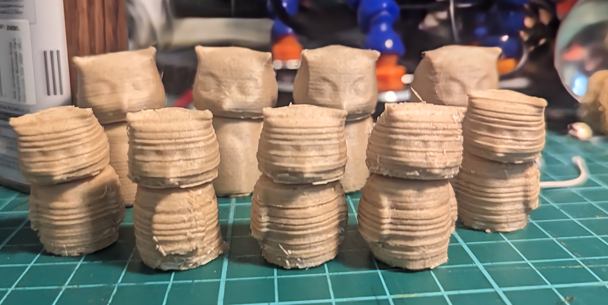
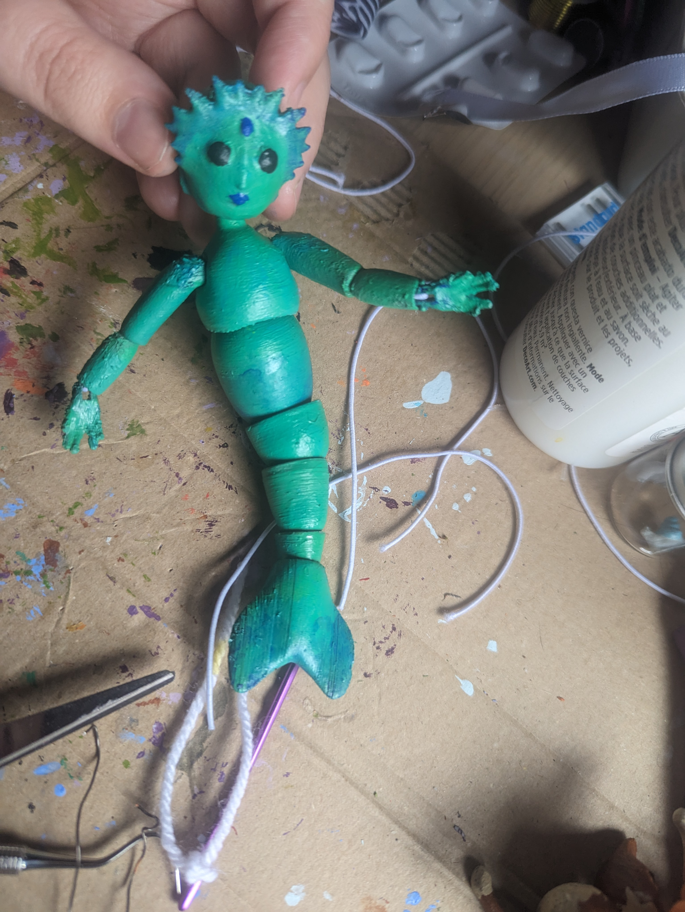
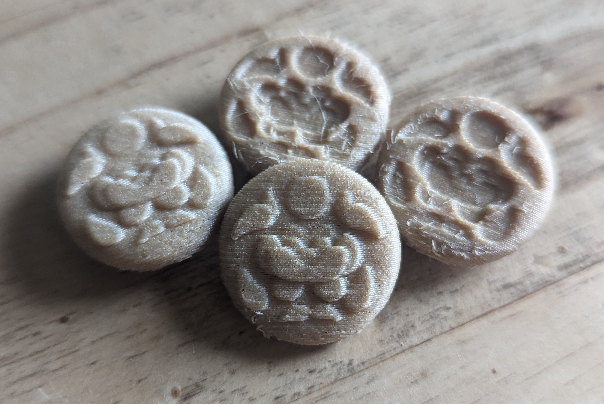

Here's my process of figuring out how best to print these wooden owls with rotating heads!


Here's my process of figuring out how best to print these wooden owls with rotating heads!

Here's an articulated mermaid doll I used to practice my arm joints!


And I've been working on printing some of my own buttons! Check here for a preview!